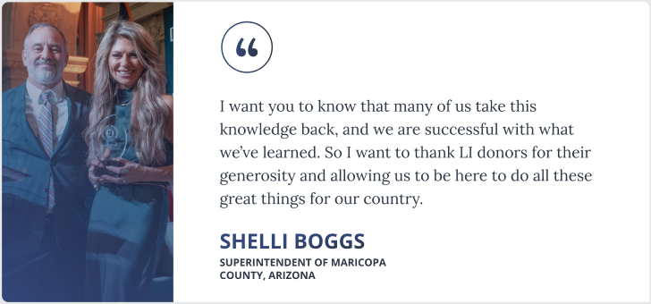
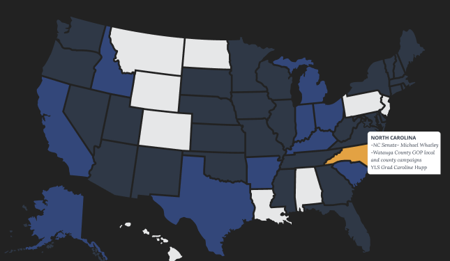
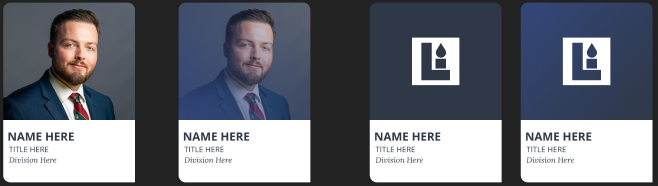
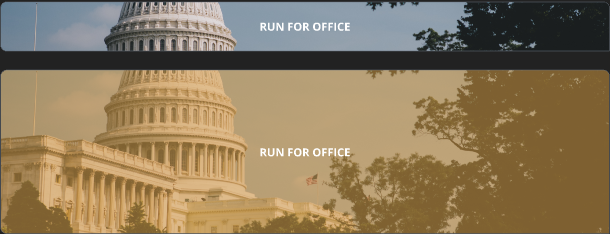
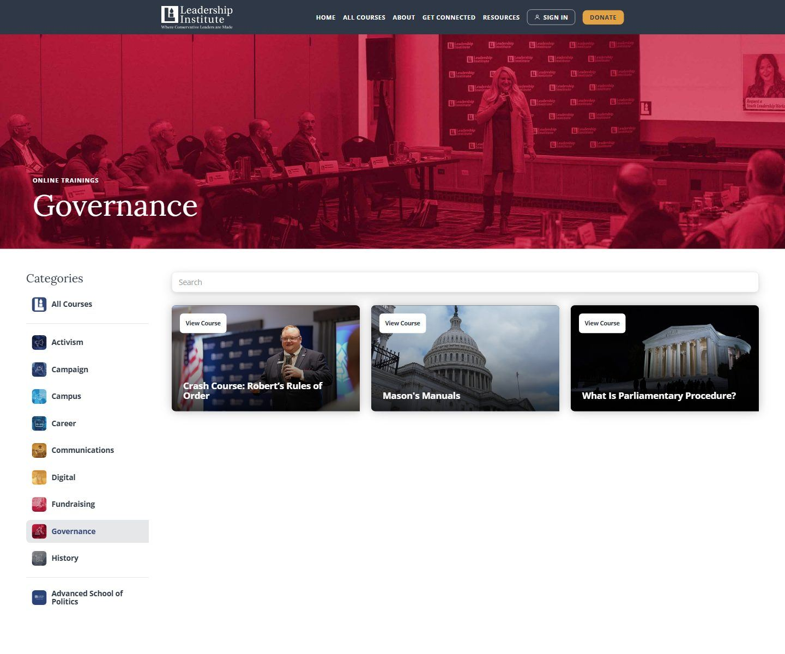
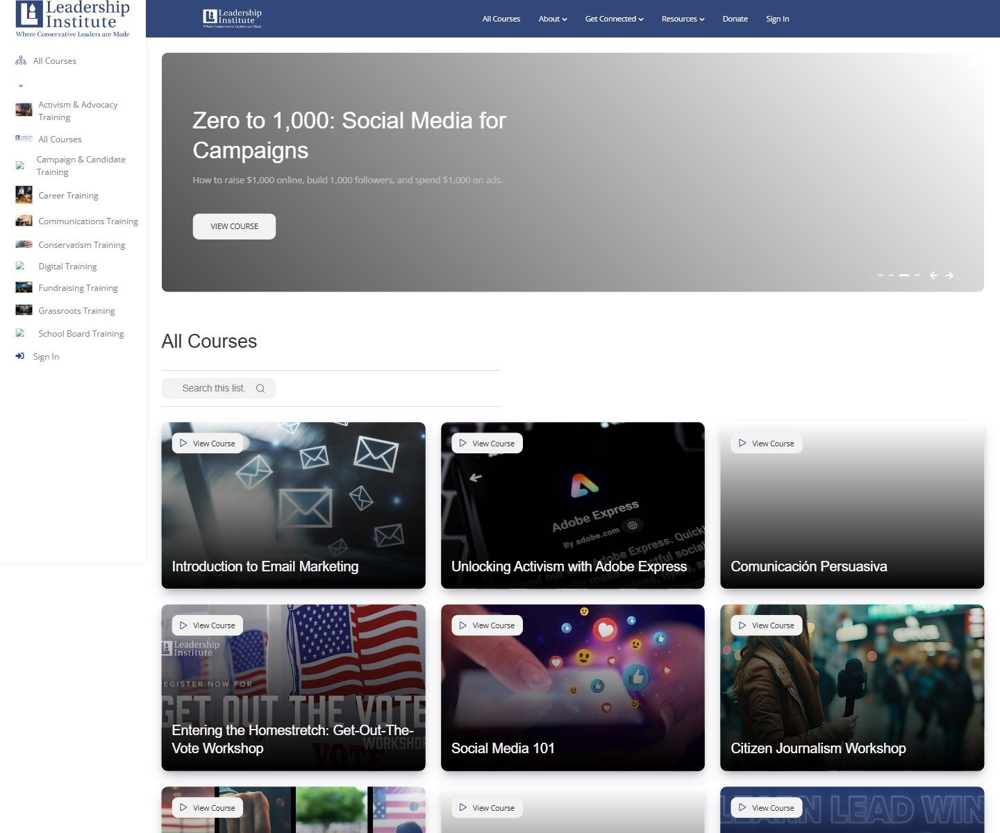
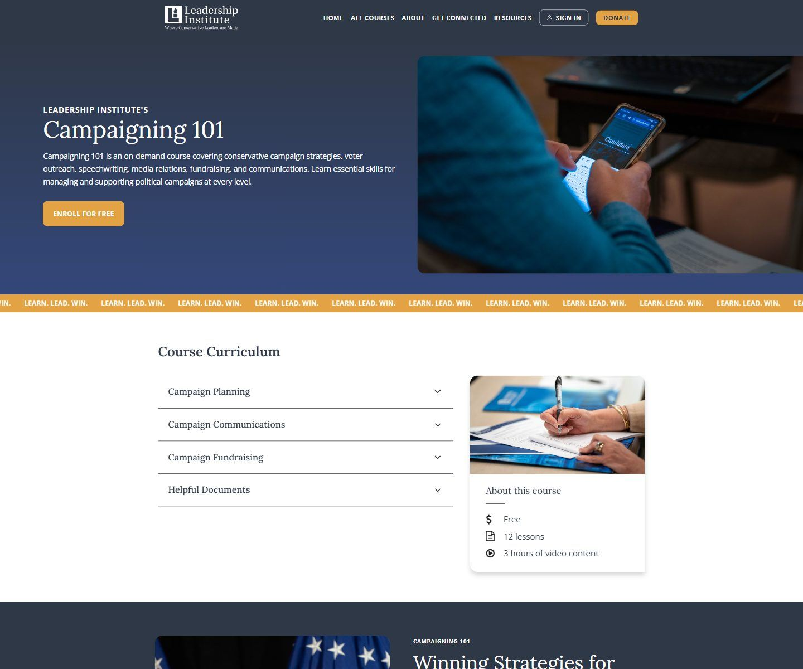
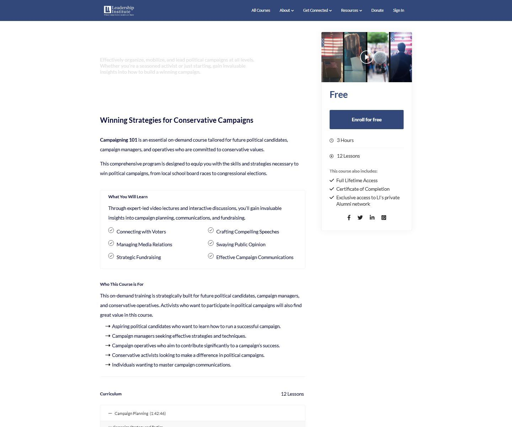

Leadership Library
A searchable, filterable library of publications, articles, and stories, with an interactive book in the hero.
I currently manage Leadership Institute's website product lane, a team whose goal is the transition to a new web deployment solution and CMS, as well as the long-term creation of a new system of building Leadership Institute's website. This incredibly talented team I have worked with has made it possible for me to share some projects that I am very proud of with user journey results that back up the team's success.
Here are some prime examples of projects I worked on that are/were deployed to leadershipinstitute.org during my time managing the website product lane. The Leadership Library and Programs Catalogue were large projects with numerous subpages that all pull from various data objects through Salesforce and our Payload CMS instance. I handled the scope and scale/project management, the UI/UX and design/brand compliance, and content of these pages, as well as providing some components coded and handed off to engineering (like the book in the hero of the Leadership Library).
A look inside the Figma components library these pages are built from.
#2F3846#33477A#E3A243#BF2040#E6E7E8



A searchable, filterable library of publications, articles, and stories, with an interactive book in the hero.
Dozens of trainings organized into a visual wall of programs, with icon filters by training type.
A shared template across every program page, so each training reads and works the same way.
A landing page for Oklahoma school board members who need state-required annual training.
I rebuilt Leadership Institute's on-demand training site on the Thinkific learning management system, handling the design, UX, and frontend development. The development also included the creation of CMS components via Liquid, so staff can update pages without touching code. This included personalized pages tied to user accounts built on Thinkific's native variables.


Before After

Before AfterDrag the handle to compare. "Before" images come from Wayback Machine archives, which didn't save every original photo.
A searchable catalog with category navigation and image-led course cards.
Reusable course pages with a clear enroll button, an expandable curriculum, and course details at a glance.
Screenshots and archived copies captured November 2026. If a live page has changed or gone offline, click its screenshot to see the full page as it looked, or open the archived copy.